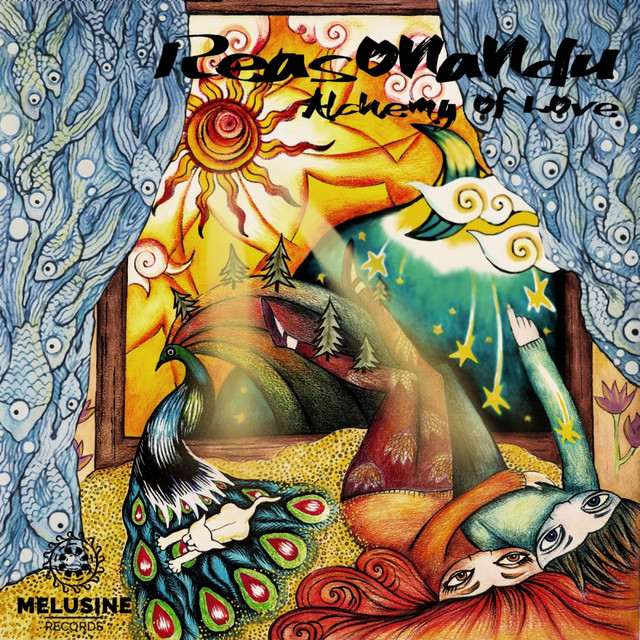

XPLAY AUDIO CARD
🔥
۱,۲۸۰ بار در توییتر شنیده شد

کیفیت استودیو • 320k
Pure Love
Reasonandu, Logical Elements
00:00
00:30
🔗 تبدیل لینک موزیک به کارت پخش
Spotify
YouTube
SoundCloud
📁 آپلود فایل صوتی مستقیم (MP3 / Voice)
یا لینک مستقیم فایل